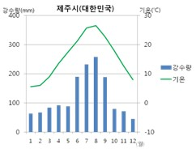

기상정보

<기상 정보>
기온: (최한월) -3도~18도, (최난월) 10도 이상
연 강수량: 서해양성 기후- 난류, 편서풍→ 연중 고름
지중해성 기후-
(겨울) 편서풍
(여름) 건조 지역의 바람→ 겨울>여름
온대 계절풍 기후-
(여름) 남쪽 바다의 고온 다습한 바람→ 강수량↑
(겨울) 북쪽 대륙의 한랭 건조한 바람→ 강수량↓
습도: 계절에 따라 다름
<
(봄, 여름) 기온이 높아서 습도↑
(가을, 겨울) 기온이 낮아서 습도↓
구름 : 사계절이 뚜렷하기 때문에 다양한 구름이 관측된다.
봄, 가을은 대기가 불안해서 다양한 종류의 구름이 형성된다
여름에는 대기 중 수증기량이 증가하여 구름이 잘 형성되며 주로 적운과 함께 국지적 소나기도 관찰된다
겨울에는 기온이 낮아져 층운이 주로 관찰되며 종종 흐린 날씨를 만든다